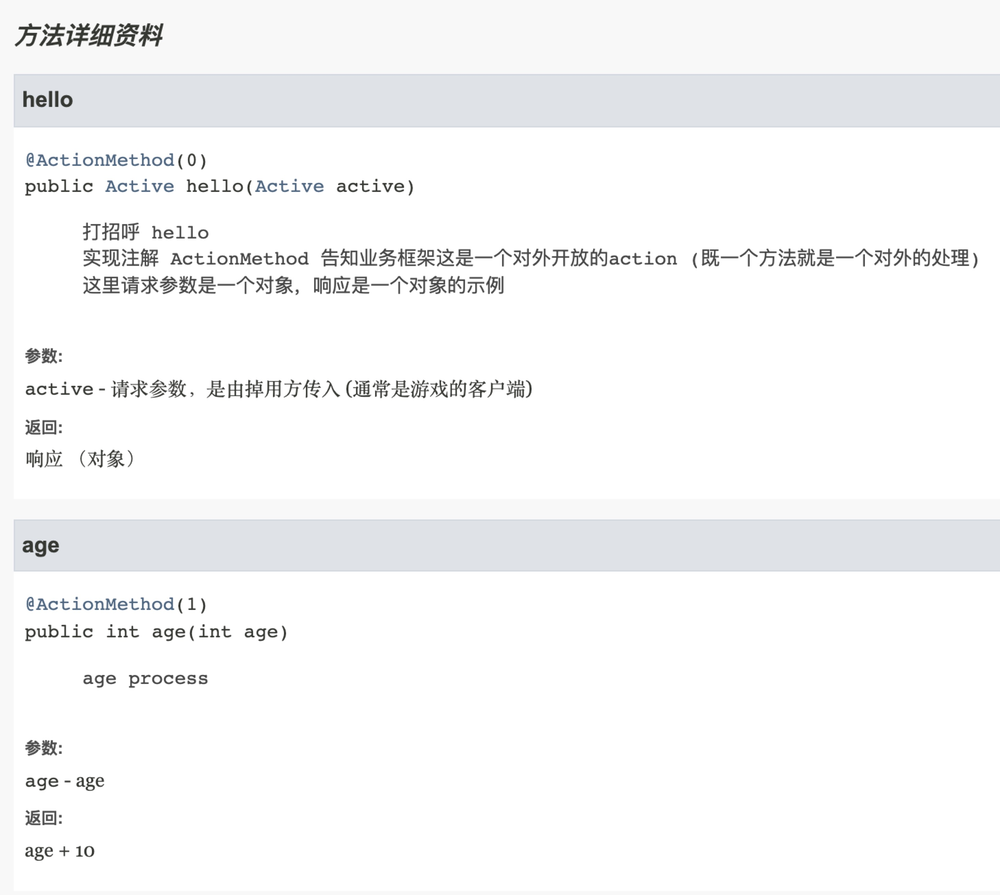

游戏技术框架

基于 sofa-bolt 的游戏框架
xxxxxxxxxx51可用于页游，手游，游戏服务器端；2对业务处理是基于disruptor环形数组来消费业务；3断线重连 心跳检测 4目前是一个空架子,没有业务, 调通了通讯部分5完成子逻辑服之间的通讯 （如： 子模块A 访问 子模块B 的某个方法，因为只有子模块B持有这些数据）正在开发的 (计划中)
xxxxxxxxxx141网关启动， 子服务器自动连接2
3广播4 子服务器广播5 抽象广播方法，内部使用 redis 或 mq 实现6 7统计用户方法掉用次数8
9分步式锁10缓存层11熔断12监控报警13
14
项目结构
启动类 示例
xxxxxxxxxx91每个项目的 **Application 是主启动类, 启动类平级包 commandline 是项目的启动项.2
3启动示例:41 启动网关 GatewayApplication52 启动游戏服-ClientAll6
71 2 步骤启动完毕后, 在 GatewayApplication 中提供了一些模拟请求8这些模拟请求通过 http 的方式触发 (模拟客户端请求网关， 网关转发数据到子服务器)9 技术框架列表
- spring-boot 2.6.x
- netty 4.x 高性能网络应用框架
- commons-pool2 对象池
- Lettuce Lettuce是一个异步高性能,可伸缩线程安全的Redis客户端
- LMAX架构 disruptor 环形数组内核
- Reactor3 异步应用基础库
- nacos 配置中心
- pb 数据描述语言。数据存储、通信协议等方面
- fastjson JSON 解析器和生成器
简介
项目使用[通讯框架]和[业务框架]来处理； 通讯框架(SOFABolt)：负责端端之间的传输数据 业务框架：负责业务的处理方式和编写方式
架构图
整体服务器通讯

层级图

通讯框架 - SOFABolt
SOFABolt 是蚂蚁金融服务集团开发的一套基于 Netty 实现的网络通信框架。
- 为了让 Java 程序员能将更多的精力放在基于网络通信的业务逻辑实现上，而不是过多的纠结于网络底层 NIO 的实现以及处理难以调试的网络问题，Netty 应运而生。
- 为了让中间件开发者能将更多的精力放在产品功能特性实现上，而不是重复地一遍遍制造通信框架的轮子，SOFABolt 应运而生。
Bolt 名字取自迪士尼动画-闪电狗，是一个基于 Netty 最佳实践的轻量、易用、高性能、易扩展的通信框架。
业务框架 - iohao-bar
- 特点：跨NIO框架, 可以做到业务代码不做任何改动就能轻松实现NIO框架的切换.(netty mina 这些都属于NIO框架)
- 屏蔽 NIO 框架
- 请求响应监控 方便日志定位
- 插件机制
- 可生成对于客户端的api文档 （代码即是文档）
业务框架可以使得网络编程变得很简单

Action 类示例.(action)
下面示例展示了对外(客户端)开放两个接口 这个示例展示了程序员的编程日常, 使用很简洁. 几乎就是一个普通的java类. 就能够完成对tcp的编程.(一个方法就是一个action), 同时对于任意MVC框架有了解的都可以很快上手. 无需了解nio框架, 甚至无需了解本框架. 直接编写业务. 一个方法处理一件事情.
xxxxxxxxxx341(ActivityModule.CMD)2public class ActivityAction {3 /**4 * <pre>5 * 打招呼 hello6 * 实现注解 ActionMethod 告知业务框架这是一个对外开放的action (既一个方法就是一个对外的处理)7 * 这里请求参数是一个对象，响应是一个对象的示例8 * </pre>9 *10 * @param active 请求参数，是由掉用方传入 (通常是游戏的客户端)11 * @return 响应 （对象）12 */13 (ActivityModule.hello)14 public Active hello(Active active) {15 Active joker = new Active();16 joker.setName("say: hello, " + active.getName());17 joker.setAge(RandomUtil.randomInt(200, 300));18 return joker;19 }20
21 /**22 * <pre>23 * age process24 * </pre>25 *26 * @param age age27 * @return age + 1028 */29 (ActivityModule.age)30 public int age(int age) {31 // 从这里可以看出，参数与返回值可以是任意类型32 return age + 10;33 }34}路由常量的定义 （不是必需的）
x
1public interface ActivityModule {2 /** 模块A - 主 cmd */3 int CMD = 1;4 /** subCmd : hello method */5 int hello = 0;6 /** subCmd : age method */7 int age = 1;8}api - 文档
由于是java的文档注释规范,所以可通过工具生成api文档. 部署到本地服务器中.
客户端程序每次打开api 都将是最新的api文档. 方法使用说明 参数 返回值这些信息. 相对于word文档等其它的形式沟通成本减少了.
从图中可以看出生成的javadoc包含: 协议码，方法的使用方式说明等。

业务框架 - 启动信息
业务框架启动时会打印出 : 对外提供的方法、插件 对外提供的方法信息包括（路由、类名、方法名、方法参数、返回值等）

领域事件 - 环形数组来消费业务
- 领域事件文档 领域事件文档


其它
不熟悉 springboot 的朋友请看这里
xxxxxxxxxx81如果你发现一些没调用的类, 却被运行了, 那么这时候就是使用了 springboot 的自动装配机制.2只需要引入包就能自动装配3
4提供的自动装配:5see:6resources --> META-INF --> spring.factories7(查看被引用的包下的 此文件夹就能找到自动装配配置)8
JDK17 新特性详解
xxxxxxxxxx21停顿时间在 10ms 以下，10ms 其实是一个很保守的数据，即便是 10ms 这个数据，也是 GC 调优几乎达不到的极值。2根据 SPECjbb 2015 的基准测试，128G 的大堆下最大停顿时间才 1.68ms，远低于 10ms，和 G1 算法相比，改进非常明显。辅助,规范,部署,构建
- docker 应用容器引擎
- Kubernetes 容器集群管理系统
- Linux 最终部署操作系统
- 遵循阿里巴巴Java开发手册
- 阿里规约在线文档
- Lombok 消除冗长的 Java 代码
- maven 项目构建工具